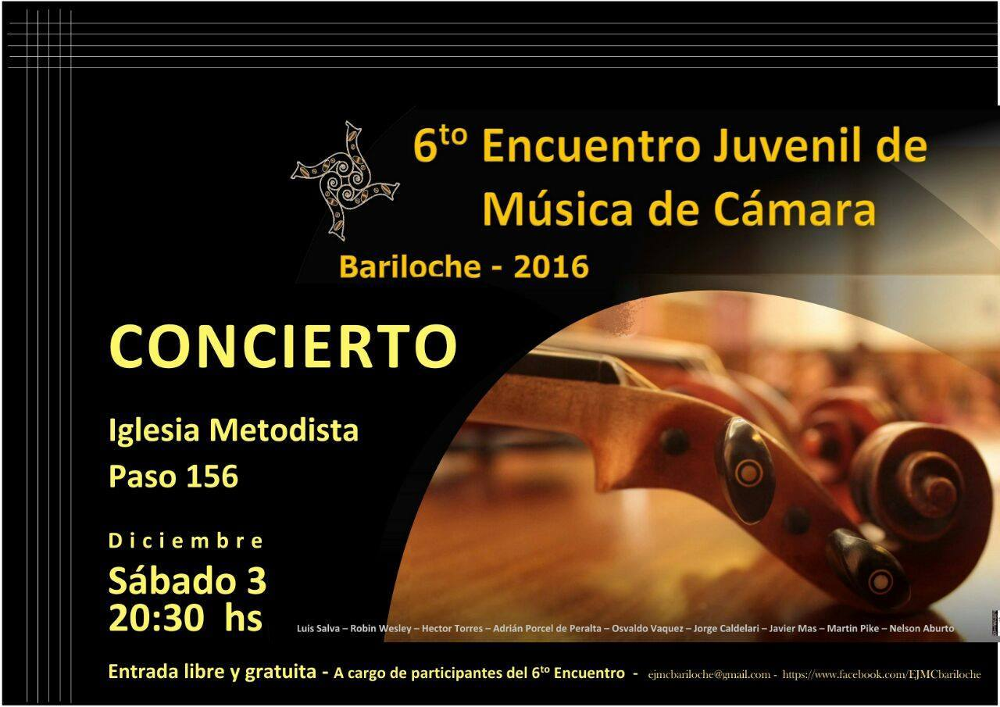
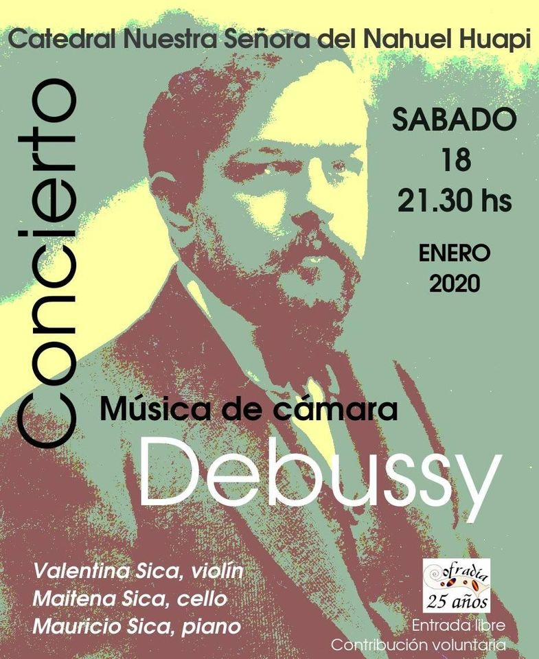
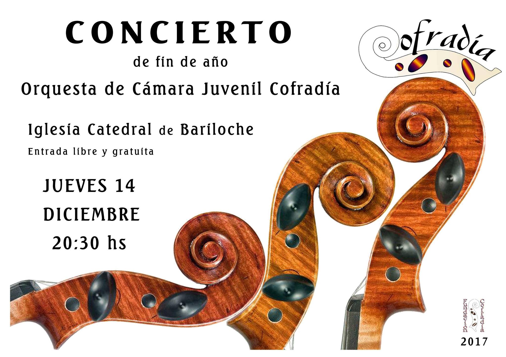
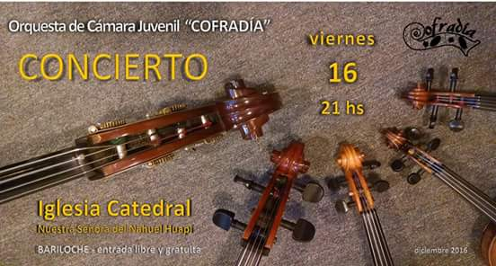

Cronograma
XII Encuentro Juvenil de Música de Cámara
Del 26 al 29 de diciembre de 2022 - Camping Musical Bariloche
Solicitar info e inscripciones a ejmcbariloche@gmail.com
Concierto Música de Cámara
Concierto final del sexto Encuentro Juvenil de Música de Cámara
Sábado 3 de diciembre - 20:30hs - Iglesia Metodista calle "Paso 156"
Entrada libre y gratuita
Concierto Música de Cámara "Debussy"
Trio Sica en concierto
- Valentina Sica - Violin
- Maitena Sica - Cello
- Mauricio Sica - Piano
18 de enero 2022 - 21:30 - Catedral Nuestra Señora del Nahuel Huapi
Entrada libre y gratuita
Concierto de fin de Año
Catedral Nuestra Señora del Nahuel Huapi
Jueves 14 de diciembre 2017 - 20:30 - Catedral Nuestra Señora del Nahuel Huapi
Entrada libre y gratuita
Concierto de fin de Año
Catedral Nuestra Señora del Nahuel Huapi
viernes 16 de diciembre 2016 - 21:00 - Catedral Nuestra Señora del Nahuel Huapi
Entrada libre y gratuita
